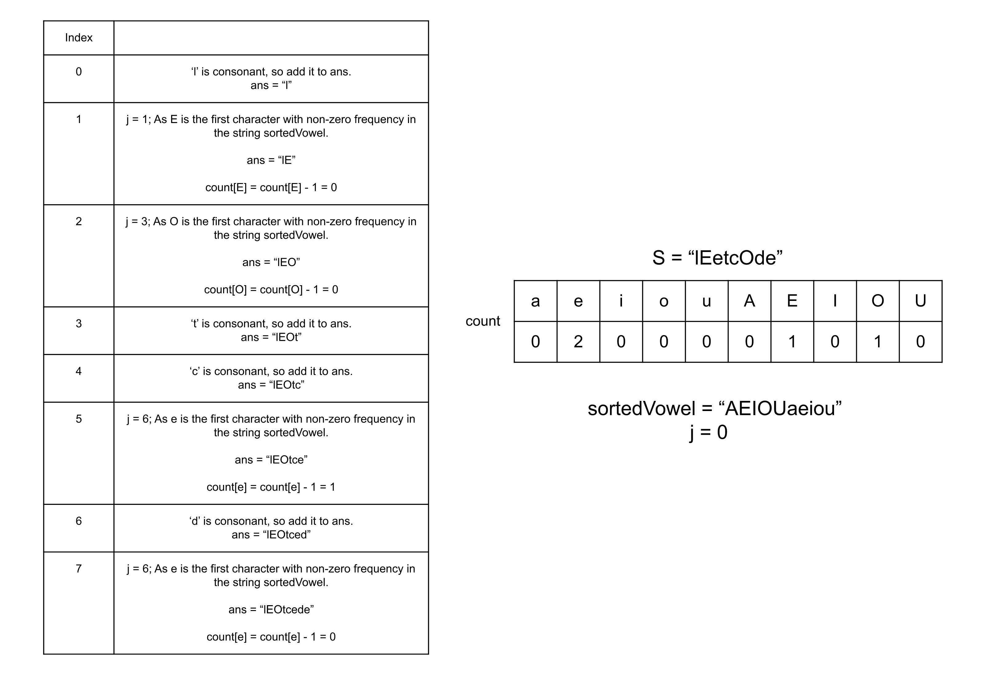

Intuition
Given a string s having English lowercase or uppercase letters, we need to build a new string such that
the vowels in the original strings are arranged in the non-decreasing order of their ASCII values.
We don't want to break the original order of the consonants, so we will not sort the whole string. Instead, we need
to sort only the vowels. Therefore, we will collect all the vowels from s into a string
temp, and sort it in ascending order. Now, we need to put these characters back into the original
string s in the sorted order, that is, the first vowel in the original string s will be
replaced with the first character in temp, the second vowel will be replaced with the second character
in temp, and so on. This way, the consonants will remain in the original order and the vowels will be
sorted in the ascending order.
In some languages where strings are immutable, we can use other mutable data structures provided by that language to collect and sort all the vowel characters.
Algorithm
isVowel that returns true if the given character is a lowercase or
uppercase vowel, and returns false otherwise.
s and store the vowels in the string temp.temp in ascending order.ans to store the answer string, and an integer j to
0 to track the current index in the string temp.
s and for each character, if the character is a vowel, we add the character
temp[j] to ans and increment j, otherwise, we add the character from
s.
ans.Implementation
Java
class Solution {
// Returns true if the character is a vowel.
boolean isVowel(Character c) {
return c == 'a' || c == 'e' || c == 'o'|| c == 'u'|| c == 'i'
|| c == 'A' || c == 'E' || c == 'O'|| c == 'U'|| c == 'I';
}
public String sortVowels(String s) {
int[] count = new int[1000];
// Store the frequencies for each character.
for (char c : s.toCharArray()) {
if (isVowel(c)) {
count[c - 'A']++;
}
}
// Sorted string having all the vowels.
String sortedVowel = "AEIOUaeiou";
StringBuilder ans = new StringBuilder();
int j = 0;
for (int i = 0; i < s.length(); i++) {
if (!isVowel(s.charAt(i))) {
ans.append(s.charAt(i));
} else {
// Skip to the character which is having remaining count.
while (count[sortedVowel.charAt(j) - 'A'] == 0) {
j++;
}
ans.append(sortedVowel.charAt(j));
count[sortedVowel.charAt(j) - 'A']--;
}
}
return ans.toString();
}
};
C++
class Solution {
public:
// Returns true if the character is a vowel.
bool isVowel(char c) {
return c == 'a' || c == 'e' || c == 'o'|| c == 'u'|| c == 'i'
|| c == 'A' || c == 'E' || c == 'O'|| c == 'U'|| c == 'I';
}
string sortVowels(string s) {
unordered_map count;
// Store the frequencies for each character.
for (char c : s) {
if (isVowel(c)) {
count[c]++;
}
}
// Sorted string having all the vowels.
string sortedVowel = "AEIOUaeiou";
string ans;
int j = 0;
for (int i = 0; i < s.size(); i++) {
if (!isVowel(s[i])) {
ans += s[i];
} else {
// Skip to the character which is having remaining count.
while (count[sortedVowel[j]] == 0) {
j++;
}
ans += sortedVowel[j];
count[sortedVowel[j]]--;
}
}
return ans;
}
};
Complexity Analysis
Here, NN
is the number of characters in the string s.
Time complexity: O(NlogN)O(N \log N)
In the worst case, all characters in the string s could be vowels, and we will have to sort all
the NN
characters which takes O(NlogN)O(N \log N) time. In the end, we will iterate over the
string s and build the string ans, this will take O(N)O(N) time. Therefore, the total time complexity is
equal to O(NlogN)O(N \log N).
Space complexity: O(N)O(N)
We need to store the vowels in the string temp which could be NN in the
worst case and thus will take O(N)O(N) space. We also need space to store the answer
string ans, however, the space to store the output is generally not considered as part of space
complexity.
Additional space is used for sorting the string temp. The space complexity of the sorting
algorithm is language-specific. For instance, in Java, the Arrays.sort() for primitives is implemented as a
variant of the quicksort algorithm whose space complexity is O(logN)O(\log N). In C++ sort() function provided by STL is a
hybrid of Quick Sort, Heap Sort, and Insertion Sort and has a worst-case space complexity of O(logN)O(\log N). Thus, using the inbuilt sort() function might
add up to O(logN)O(\log N) to space complexity.
Intuition
In the previous approach, we incurred an extra time complexity of O(NlogN)O(N \log N) due to sorting the string temp. The important
point to observe here is that the string temp will only have ten different characters, as there are
five vowels and their corresponding upper-case letters. In such scenarios, where the length is much greater than the
number of distinct characters, it's much more efficient to use counting sort. This is because we will just have to
count the frequencies for just ten characters instead of sorting all the characters in the string temp.
We will store the frequencies of these vowels in a map count.
Since we know the ten characters we can have in the string temp, to get the ascending order of temp
we can just iterate over the ten vowels in their ASCII order with their count. Hence, we will keep the string sortedVowels
which will be equal to AEIOUaeiou which represents the ten vowels in ascending order of their ASCII
values. Then similar to the previous approach, we will iterate over the string s, and for every vowel
character, we will find the sorted vowel character we need to place here. For this, we will find the first character
in AEIOUaeiou that has a remaining count in the map count, add this character to
s, and decrement the count of this character.

Algorithm
Create a method isVowel that returns true if the given character is a lowercase or
uppercase vowel or not, otherwise return false.
Iterate over the string s and store the frequencies of each vowel in the map count.
Initialize:
sortedVowel to AEIOUaeiou the answer string, andans to store the answer string.j to 0 to track the current index in the string
sortedVowel.
Iterate over the string s and for each character
ans.sortedVowel which has a
non-zero frequency in the map count.
sortedVowel[j] to ans and decrement the count in the map
count.
Return ans.
Implementation
Java
class Solution {
// Returns true if the character is a vowel.
boolean isVowel(Character c) {
return c == 'a' || c == 'e' || c == 'o'|| c == 'u'|| c == 'i'
|| c == 'A' || c == 'E' || c == 'O'|| c == 'U'|| c == 'I';
}
public String sortVowels(String s) {
ArrayList temp = new ArrayList<>();
// Store the vowels in the temporary string.
for (char c : s.toCharArray()) {
if (isVowel(c)) {
temp.add(c);
}
}
// Sort the temporary string characters in ascending order.
Collections.sort(temp);
StringBuilder ans = new StringBuilder();
int j = 0;
for (int i = 0; i < s.length(); i++) {
// If the character is a vowel, replace it with the character in the string temp.
if (isVowel(s.charAt(i))) {
ans.append(temp.get(j));
j++;
} else {
ans.append(s.charAt(i));
}
}
return ans.toString();
}
};
C++
class Solution {
public:
// Returns true if the character is a vowel.
bool isVowel(char c) {
return c == 'a' || c == 'e' || c == 'o'|| c == 'u'|| c == 'i'
|| c == 'A' || c == 'E' || c == 'O'|| c == 'U'|| c == 'I';
}
string sortVowels(string s) {
string temp;
// Store the vowels in the temporary string.
for (char c : s) {
if (isVowel(c)) {
temp += c;
}
}
// Sort the temporary string characters in ascending order.
sort(temp.begin(), temp.end());
int j = 0;
string ans;
for (int i = 0; i < s.size(); i++) {
// If the character is a vowel, replace it with the character in the string temp.
if (isVowel(s[i])) {
ans += temp[j];
j++;
} else {
ans += s[i];
}
}
return ans;
}
};
Complexity Analysis
Here, NN
is the number of characters in the string s.
Time complexity: O(N)O(N)
To store the frequencies in the map count we need O(N)O(N) time. Then we iterate over each character in the
string s to build the answer string ans, we first have to find the character in
the string sortedVowel. This operation however will only take O(1)O(1) time as there are
only ten characters and we never iterate over the character twice. Hence, the total time complexity is equal
to O(N)O(N).
Space complexity: O(1)O(1)
The map count will only need O(1)O(1) space as there are only ten vowels. The string
sortedVowels also stores only ten characters and hence needs constant space. We also need space
to store the answer string ans, however, the space to store the output is generally not
considered as part of space complexity. Hence, the space complexity is constant.